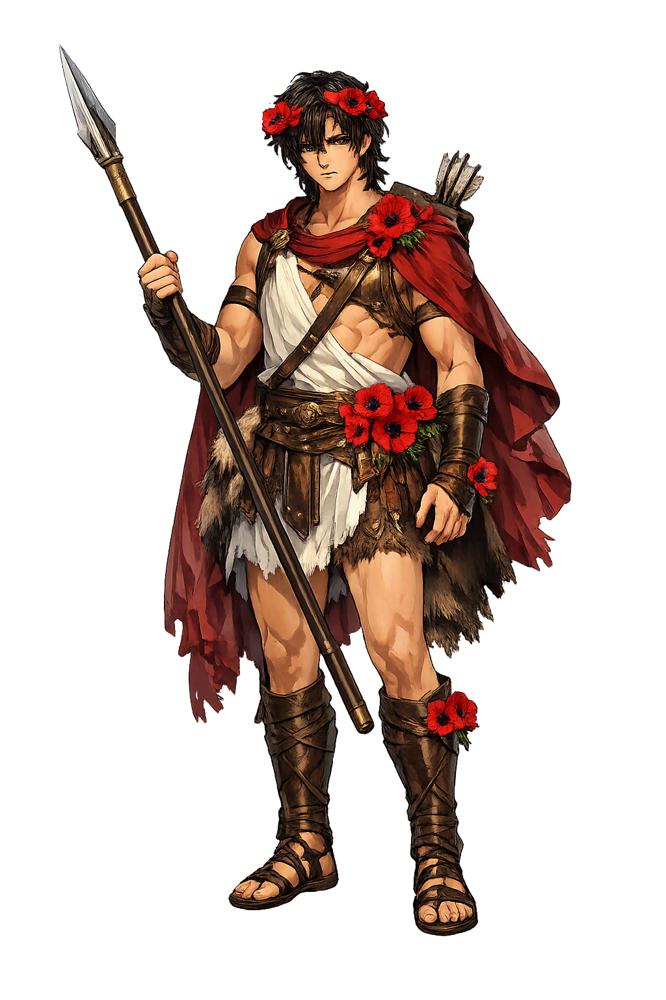

The Authentic Orthography
Beauty, Desire, Renewal · Lord (from Semitic ʾādōn)

Unicode restoration and ASCII comparison
Ἄδωνις
The name in its original Greek form. Ádōnis (Ἄδωνις) is attested in the source tradition — “Lord (from Semitic ʾādōn)”. Its long vowels and acute accents carry the full phonetic and orthographic weight of the source tradition.
adonis
Reduced to plain adonis, the name loses everything that made it specific: long vowels and acute accents. What remains is an ASCII string that machines can parse but that no longer speaks with its original voice.
Ádōnis
The Unicode restoration recovers what ASCII flattened. Ádōnis restores long vowels and acute accents, returning the name to its original written dignity. The domain encodes to Punycode, but the browser displays the truth.
Ádōnis.com → xn--dnis-4na36d.com
The non-ASCII characters in Ádōnis are encoded while the ASCII remains visible. To the DNS, it is Punycode. To humanity, it is Ádōnis.
How Ádōnis is preserved in writing
A bespoke provenance study for Ádōnis is being prepared by the PUNICODEX scholarly team.
Contribute scholarly provenance →Owned, ideal, and ASCII forms of Ádōnis
Ádōnis
Restores Ἄδωνις. The live temple domain — ádōnis.com.
adonis
Flattens Ἄδωνις. The plain ASCII fallback — what DNS and legacy systems see.
How Ádōnis was spoken
Desire, Vegetation, and the Cycle of Death and Renewal
Ádōnis is the beautiful youth whom love and death divide. Born from the grief of Myrrha and the myrrh tree, desired by Aphrodítē and Persephonē alike, he embodies the fragile glory of spring: flowers that bloom brilliantly and die young. His cult spread across the Greek East as a women's rite of lament and rebirth.
A youth of such beauty that the goddess of love herself cannot leave him.
The anemone and the myrrh tree mark his blood and birth; his death is the death of the green year.
The Adṓnia was a rite of mourning women, planting gardens that withered to enact grief.
A boar, the animal of Aphrodítē's anger or of his own hubris, tears him open.
Stories of Ádōnis
Ádōnis's myth turns on beauty that cannot be kept. He is desired, born, killed, and divided — a story the Greeks borrowed from the Near East and made their own.
Myrrha, daughter of King Kinyras, conceived an incestuous passion for her father. When she was transformed into a myrrh tree as punishment, the tree split open after ten months and Ádōnis was born. Aphrodítē, pierced by Eros's arrow, hid the infant in a chest and gave him to Persephonē to raise.
When Persephonē opened the chest and saw Ádōnis, she refused to return him. Zeus decreed that he would spend a third of the year with Aphrodítē, a third with Persephonē, and a third where he chose — he chose Aphrodítē, for love of beauty and the living world.
Despite Aphrodítē's warnings, Ádōnis hunted a boar. The beast gored him in the thigh. From his blood the anemone rose, and Aphrodítē's grief became the template for the women's Adṓnia festival.
Across the Greek world women planted 'Gardens of Adonis' — lettuces and herbs in shallow trays that sprouted quickly and withered. They carried images of the dead god to the sea, lamenting and celebrating the cycle of growth and loss.
Ádōnis is the god of what cannot last. Every spring his myth asks: why do the most beautiful things die first? The answer is not theological; it is seasonal. He is the flower, the harvest, the young lover, the grief that returns every year. To worship Ádōnis is to consent to love something you will lose.
Enter Extended Lore